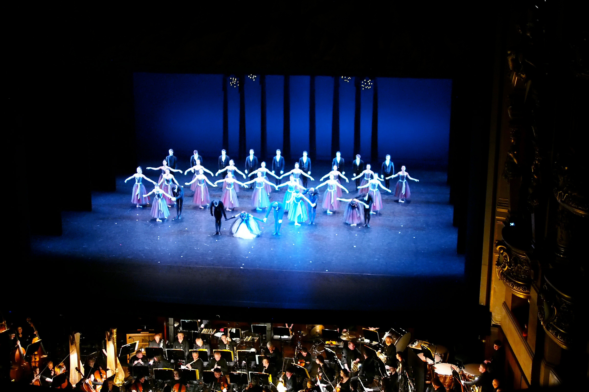

Whether you're a complete beginner dreaming of your first plié or a seasoned dancer looking to refine your technique, Edinburgh has a wealth of ballet classes to suit every level, age, and interest. From graceful adult beginner sessions to professional training for aspiring dancers, the city offers a vibrant ballet scene nestled among its historic charm. In this guide, you'll discover the best places across Edinburgh to take ballet classes — including local studios, community centres, dance schools, and hidden gems you might not have heard of. We’ve gathered essential details on class types, levels, schedules, and what to expect, so you can find the perfect fit for your dance journey. Whether you're dancing for fitness, expression, or pure joy, Edinburgh’s ballet community welcomes you.

Edinburgh’s rich cultural landscape extends far beyond its festivals and historic landmarks — it also boasts a thriving ballet scene that brings both classic elegance and contemporary creativity to the stage. Whether you're a lifelong admirer of the art form or a curious first-time attendee, there’s always a ballet performance waiting to inspire. From grand productions at the Festival Theatre to intimate performances by local dance companies, the city offers a diverse calendar of shows throughout the year. This guide will help you discover upcoming ballet events, explore the venues that host them, and learn how to book tickets — so you’ll never miss the magic of the next pas de deux. Get ready to be moved by music, storytelling, and the timeless beauty of ballet in the heart of Edinburgh.
Starting ballet doesn’t mean you need to buy a full wardrobe of leotards, skirts, and pointe shoes right away. In fact, all you need to begin is a comfortable outfit you can move in — and a pair of soft ballet shoes. That’s more than enough for your first class and to feel the joy of movement at the barre. When you're ready to explore more, Edinburgh has a lovely selection of local ballet shops offering everything from elegant wrap skirts and leotards to warm-up gear and pointe shoes. Whether you're just starting out or building your dream ballet wardrobe, this guide will show you where to find quality dancewear and friendly expert advice — without the pressure to buy everything at once. Ballet is about progress, grace, and expression — not perfection. Let’s start with the basics and grow from there.